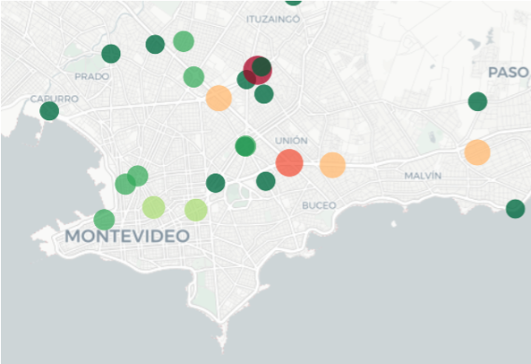

UTEC - Análisis de Siniestros de Tránsito (Montevideo 2022)
Análisis exploratorio de datos abiertos de la Intendencia de Montevideo (2022) sobre siniestros de tránsito. Mediante Python, Pandas, Matplotlib, Seaborn y Plotly identifiqué patrones por día, hora, tipo de vehículo y zona geográfica. Los miércoles y tardes concentran el mayor riesgo; los motociclistas representan el 58% de los siniestros urbanos. Proyecto de la materia Fundamentos de Programación para Ciencia de Datos (UTEC).